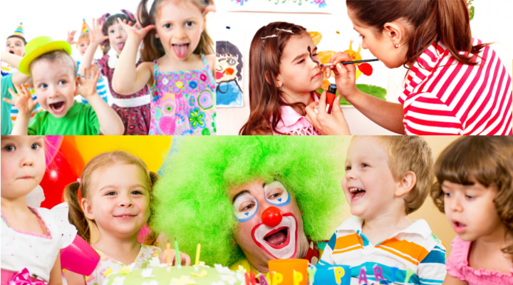

Proporcionar un espacio de diversion, el cual pueda ser llamativo para el festejado y los invitados, se hace una lista de comida para los invitados o incluso la comida preferida del niño, ir rentando el lugar contemplado con cierto tiempo de anticipacion para asi tener un dia memorable y bien organizado.
Un salón de eventos generalmente incluye el espacio físico, mobiliario básico (mesas, sillas, mantelería), servicios de personal (meseros, capitán), montaje y decoración, iluminación, sonido, y a menudo estacionamiento y seguridad, aunque los paquetes varían mucho e incluyen extras como banquete, DJ, coordinador y amenidades. Lo fundamental es el espacio amplio y funcional, con sanitarios adecuados y una cocina o área de preparación para el catering.

Hipervinculo interno (Los chiquitines)